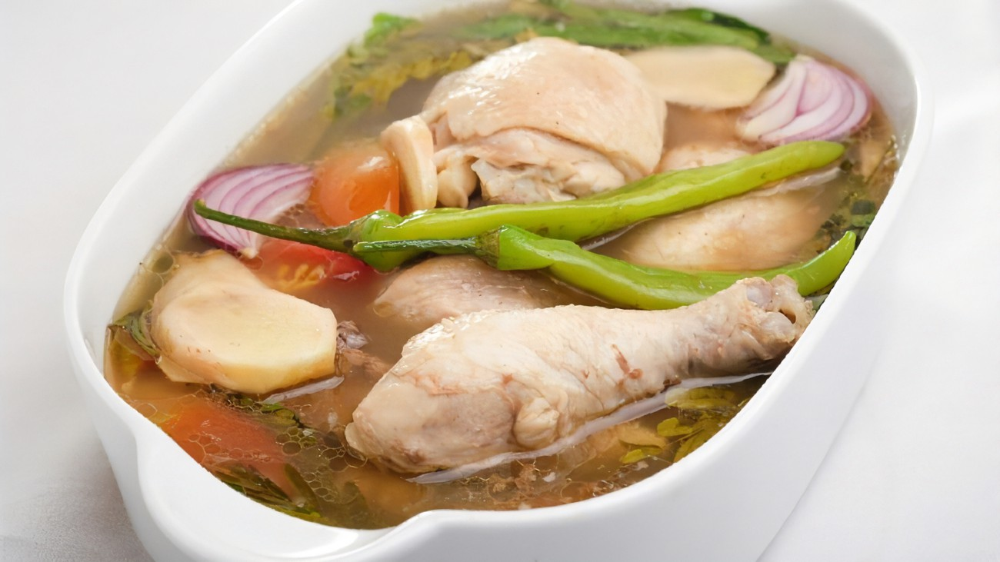

Sinampalukang Manok Recipe
What is Sinampalukang Manok?
Sinampalukang Manok is a Filipino sour soup made with chicken and flavored with young tamarind leaves.
Piping hot and
comforting, it's the perfect rainy day food!
Ingredients
1 kilo chicken sliced into serving sizes (we used drumstick cut)
2 cups Kangkong river spinach
1 bunch Sitaw string beans
1 medium Eggplant sliced
4 small tomatoes quartered
1 cup Tamarind leaves young leaves if available
1 bunch Lemongrass tanglad
1 medium onion sliced
2 pcs. long chilli
1 sachet Sinigang mix
1 chicken cube bouillon
3 tbsp Patis fish sauce
3 tbsp Canola Cooking oil
4 cups water
salt to taste
Instructions / How to Cook
1. Pour Canola oil in a large cooking pot then apply heat.
2. Add onion and tomatoes then saute.
3. When it becomes soft, add the chicken.
4. Let the chicken cook until it turns light brown.
5. Add in the fish sauce, and the chicken cube(bouillon) then stir well.
6. Pour water and add lemongrass then cover the pot and bring it to boil.
7. When it begins to boil add the tamarind leaves and the sinigang mix powder.
8. Continue to cook until the chicken becomes tender.
9. Add the chilis, eggplant and Sitaw (string beans) then simmer for 5 minutes.
10. Add kangkong leaves and simmer for another 5 minutes.
11. You can add more Salt according to your taste.
12. Serve in a large bowl with fried fish or friend chicken.